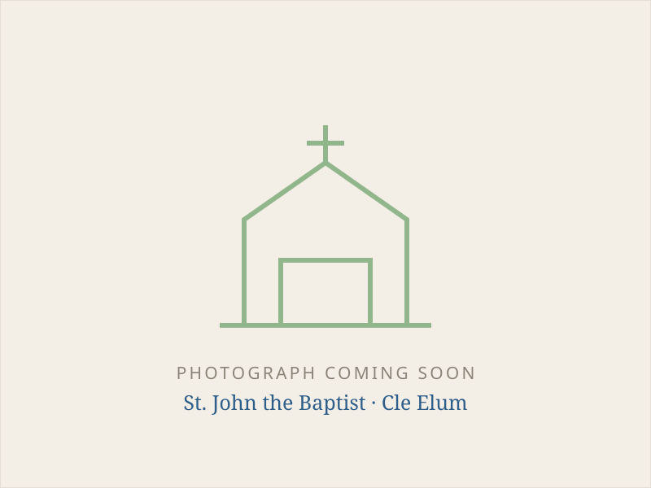

San Juan Bautista
La mayor de nuestras dos parroquias, levantada en 1902 por las familias inmigrantes que llegaron a trabajar las vetas de carbón del alto valle.
Cuándo nos reunimos
Dónde encontrarnos

Todas nuestras Misas se celebran actualmente en inglés. Muchas familias hispanohablantes forman parte de nuestra comunidad, y el Padre Higuera habla español, así que no dude en acercarse a él antes o después de la Misa.
Una parroquia levantada por mineros
Inmigrantes católicos de Italia, Croacia, Polonia e Irlanda llegaron a trabajar las vetas de carbón del alto valle y al principio se reunían como misión de St. Andrew en Ellensburg. Para 1902 ya habían construido su primera iglesia y, en 1914, la misión se convirtió en parroquia independiente bajo el patrocinio de San Juan Bautista.
El 25 de junio de 1918, un incendio catastrófico arrasó Cle Elum y destruyó la iglesia y la casa parroquial junto con buena parte de la ciudad. La iglesia de ladrillo que vemos hoy, con su característico campanario de madera, se construyó en 1921 y desde entonces ha servido a la parroquia.
Leer la historia completa →San Juan Bautista, Precursor del Señor
Antes del nacimiento de Juan, el ángel Gabriel anunció que estaría lleno del Espíritu Santo e iría delante del Señor “con el espíritu y el poder de Elías”. Su padre Zacarías lo proclamó “profeta del Altísimo”, enviado para preparar los caminos del Señor. El mismo Cristo afirmó: “Entre los nacidos de mujer no ha surgido uno mayor que Juan el Bautista”.
Juan se encuentra en el umbral del Evangelio como el último de los profetas y el precursor inmediato del Mesías. Llamó a Israel a la conversión, bautizó a Jesús en el Jordán y dirigió a sus propios discípulos hacia Cristo con estas palabras: “Este es el Cordero de Dios, que quita el pecado del mundo”. El cordero de nuestro escudo parroquial recuerda este testimonio.
La fidelidad de Juan le costó la vida. Denunció el pecado de Herodes y, por negarse a guardar silencio ante la injusticia, fue encarcelado y decapitado. Toda su misión queda resumida en una sola declaración: “Es preciso que él crezca y que yo disminuya”. La Iglesia celebra su Natividad el 24 de junio y su Martirio el 29 de agosto. Bajo su patronazgo, nuestra parroquia está llamada a preparar el camino de Cristo y dirigir hacia él todos los corazones.
Apoye a San Juan Bautista
Esta iglesia de ladrillo está en la calle 2nd desde 1921, reconstruida después de que el fuego destruyera la original. Un siglo de inviernos de montaña, una comunidad que crece y unas instalaciones que envejecen hacen que el trabajo de mantenerla cálida y acogedora nunca se detenga.
Donar a San Juan Bautista